Fire
This tab holds settings to define the look of rendered fire. However, you can render any channel as fire.
For the rendering of fire Effex uses two channels, the Temperature channel and the Fire (Burn products) channel.
What we perceive as flames is actually soot created from fire combustion that becomes visible (or starts to get luminant) by the so called blackbody radiation of the temperature. Roughly said, when temperature becomes so hot it starts to emit light which we then see as flames.
So flames are tightly linked to smoke/soot when we want to model flames. At least when you want to render fire in a physically accurate manner. Of course, it's not necessary to have smoke to render fire in Effex, so you have every artistic freedom to render your fire simulations.
Temperature channel
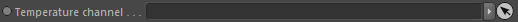
Takes a scalar channel containing temperature values. This channel is required.
Fire Channel
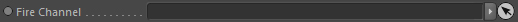
Takes a fire channel. This node is optional.
Fluid Dynamics
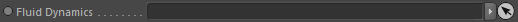
Takes a fluid dynamics node to allow render advection of fire. This node is optional.
The Advection setting is activated once linked.
Advection
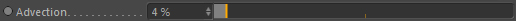
During rendering the channel data can be advected resulting in way sharper and more details.
Setting this too high may result in artefacts though.
The value is given as a percentage of a second (e.g 10% are 0.1 seconds).
GI intensity
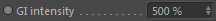
A multiplier for the fire radiation during GI calculations.
Visibility determined by..
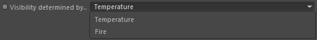
This lets you select the channel that is used to detect the visibility of flames/fire. Either the burn channel (lifetime of fire, burn products) or the temperature (blackbody radiation).
Using the temperature is physically correct as it generates the 'light' emission but using the burn channel can be easier and still plausible.
Default Density
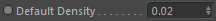
If no smoke density channel is linked (so if no smoke is rendered) the fire is missing soot information.
This sets a constant default smoke density for use in fire rendering (see top description why this is needed).
Note: If you have a smoke channel in use, you should set this value to 0.0!
Fire::Color
Define the fire colors during rendering with the following settings.
Luminance
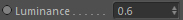
Defines how much light is scattered into the direction of the used camera.
Higher values result in brighter fire..
Absorption
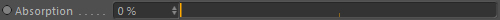
The absorption coefficient defines how the light is absorbed by the fire.
Usually for fire you leave it at 0% because the smoke channel will already do its absorption.
But it can be used for artistic adjustments. It's great to get brownish looking flames.
Type
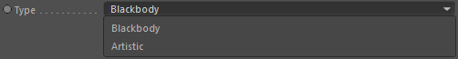
The colors are sampled on each step along the ray. This defines on what the color of the fire depends on at each step.
Blackbody
The temperature based physical blackbody spectrum is used to define the fire color. This gives the most realistic results.
Artistic
The detection channel's density at the sample position is used to select a color from the color gradient. This allows to use custom colors for your flames.
Color (Artistic)

Only available if Type is set to 'Artistic'.
Defines the color of the fire based on the visibility detection channel values (the temperature values are already
modified by the Mapping at this stage).
The mapping range is defined by the detection channel's
Minimum Value and
Maximum Value settings.
Color (Blackbody)
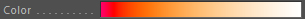
(Only available when Type: Blackbody)
Gives a preview gradient field (which cannot be edited) of the physical blackbody colors.
Mapping

(Only available when Type: Blackbody)
As the Blackbody spectrum is highly dynamic (its intensities can go beyond 100% and are radiance values) it must be converted to RGB space. The tone mapping is used for this. You have several color spaces and encoding systems as targets to accomplish this.
NTSC
Blackbody spectrum as perceived on NTSC systems
PAL/Secam
Blackbody spectrum as perceived on PAL/SECAM systems
SMPTE
Blackbody spectrum as perceived in SMPTE standard (see http://www. smpte.org, SMPTE 0274M HD 1080 Standard)
HDTV
Blackbody spectrum as perceived in HDTV standard
CIE Human perception
Blackbody spectrum taking into account the perception of human eyes (physically most accurate mode)
CIE REC 709
Blackbody spectrum as perceived in HD Widescreen (16:9) standard
Color Boost
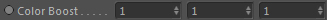
(Only available when Type: Blackbody)
Allows to boost certain colors of the Blackbody spectrum.
X-component: Redish part
Y-component: Yellowish part
Z-component: Red-Yellow shift
Intensity
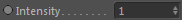
(Only available when Type: Blackbody)
Blackbody intensity. This results in a brighter appearance of the colors.
Temperature Scale
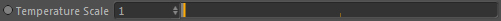
(Only available when Type: Blackbody)
Rescales the temperature that is used to extract the Blackbody colors. This results in the spectrum to be shifted more to the white point.
Gamma correction
Correct gamma according to human perception (see Gamma correction on Wikipedia for more details).
Basically this visually brightens the blackbody spectrum.
White Point normalised
Normalise the range so that the white areas of the blackbody specturm is at maximum (most right in the blackbody 'Color' preview).
Fire::Radiation
This is the multiple scattering part of fire rendering that results from
radiation. So smoke that is lit by the fire is calculated with the following settings.
Power
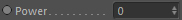
The power of fire light radiation.
Algorithm
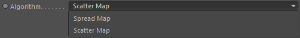
Effex incorporates two different algorithms to simulate lighting of smoke from fire.
Spread Map
This is the simpler algorithm but it's fast and gives great and predictable results.
Scatter Map
This is an Effex own invention and works similar to the Spread map except that it
uses a leveset approach for distance calculations and can include absorption effects as well.
Voxel Scale
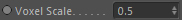
The radiation map resolution is based on the resolution of the linked detection channel (temperature or fire).
With this setting you can lower the resolution of the map. A value of 0.5 is half the resolution.
This can increase precomputation time especially at higher resolutions. The default value
is a good trade between speed and quality.
Lower resolutions result in lower quality of the radiation map.
Mapping
This controls the mapping of the radiation map intensities.
Color Type
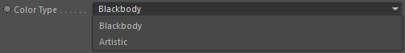
The color of the radiation to use.
Blackbody
Use the blackbody color of the fire.
Artistic
Use a custom color gradient to define the color.
Color
(Only available if Color Type: Artistic)
The user-defineable color gradient for the radiation.
Max. Distance
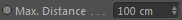
The maximum distance of smoke from the flames that is affected by the radiation map.
Higher values result in further away areas to be affected.
Temperature Scale
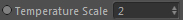
(Only available when Color Type: Blackbody)
Rescales the temperature that is used to extract the Blackbody colors.
This results in the spectrum to be shifted more to the white point.
Scatter
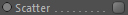
(Only available if Algorithm: Scatter Map)
Activates the scatter map to also include scattering.
Fire::Temperature
Global settings to modify and edit the values of the specified temperature channel.
This is the most important setting to control the look of your flames! It's better to alter the temperature here instead of directly in the simulation.
This is the most important setting to control the look of your flames! It's better to alter the temperature here instead of directly in the simulation.
Threshold (kelvin)
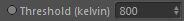
This is a threshold value given in kelvin that defines at which temperature flames become visible.
Mapping
Remaps the temperature values in the temperature grid before rendering.
The mapping range is defined by the temperature channel
Minimum Value and
Maximum Value settings.
Constraints

You can alter the temperature values with constraints here.
See 'Constraints' for more information.
Blur iterations
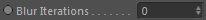
Defines the amount of blurring passes performed on the temperature channel data.
Blur amount (voxels)
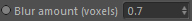
Defines the strength (length of falloff kernel) of the blurring per iteration. The value is given in grid cell/voxel size.
This allows for smoother transitions of the flames, but also results in less details. As blurring is an iterative process and can be slow for large values, this should always be used with caution and sensible values.
Fire::Flames
Here you can control the appearance of the fire channel. It is called flames because if
you do link a fire channel, you would only do this to have it be used as detection channel for
the flames visibility, so the fire grid contains the flames directly.
Threshold
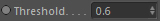
This threshold value controls which parts of the fire is visible as flames.
Make sure you never set this value higher than the Cooling Point setting in the fire channel
but always keep it lower. So threshold < (Cooling Point/Max. Temperature).
Mapping
Remaps the values in the fire grid before rendering.
The mapping range is defined by the fire channel
Minimum Value and
Maximum Value settings.
Constraints
You can alter the fire values with constraints here.
See 'Constraints' for more information.
Blur iterations
Defines the amount of blurring passes performed on the fire channel data.
Blur amount (voxels)
Defines the strength (length of falloff kernel) of the blurring per iteration. The value is given in grid cell/voxel size.
This allows for smoother transitions of the flames, but also results in less details. As blurring is an iterative process and can be slow for large values, this should always be used with caution and sensible values.